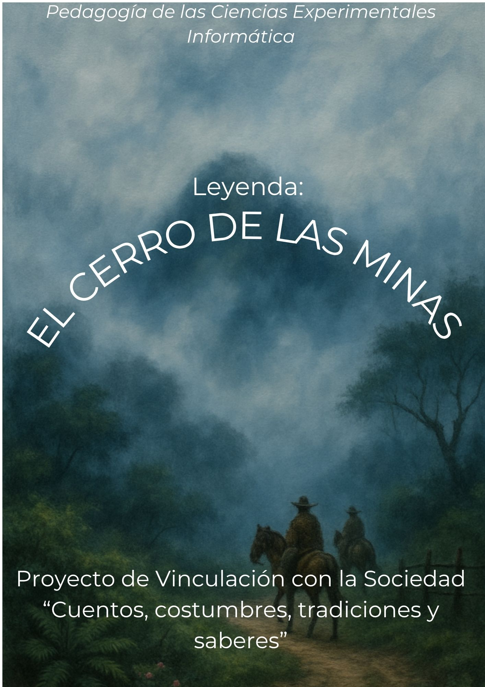

Biblioteca Digital
Espacio virtual para acceder a recursos culturales, educativos y audiovisuales de nuestra comunidad.
Cuento Multiformato
Historia disponible en diferentes formatos digitales: lectura, video y audio.

El Cerro de las Minas
Leyenda tradicional de nuestra comunidad, adaptada mediante recursos digitales para conservar y compartir nuestra memoria cultural.
Videocuentos
Colección audiovisual de cuentos y relatos disponibles para visualizar en línea.
El Caballero y las espuelas de oro
Relato audiovisual disponible para conocer nuestras historias y tradiciones.
El Puente del Diablo
Nuevo recurso audiovisual disponible en nuestra biblioteca digital.